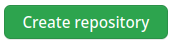
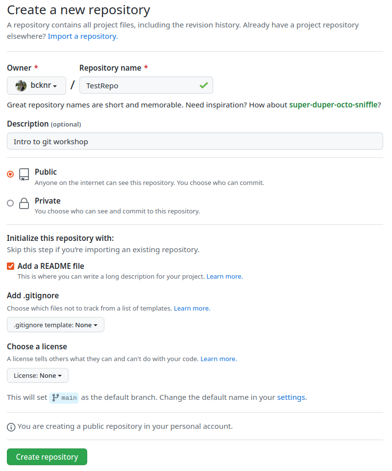
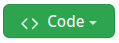
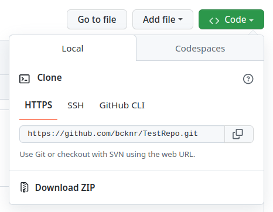
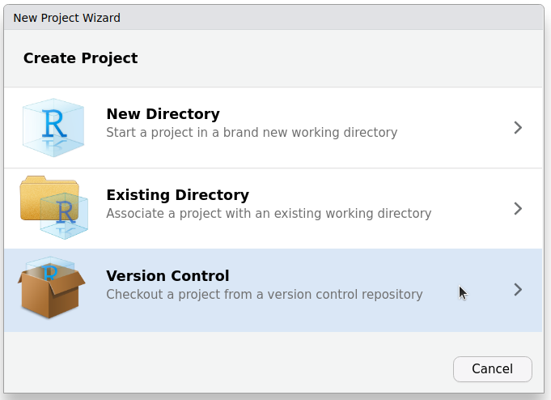
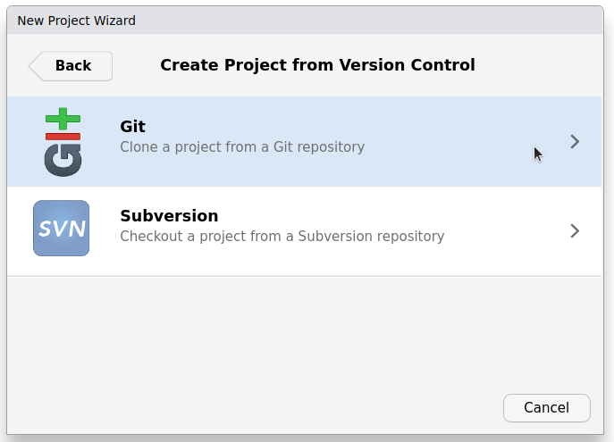
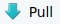
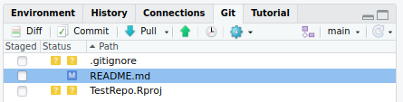
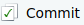
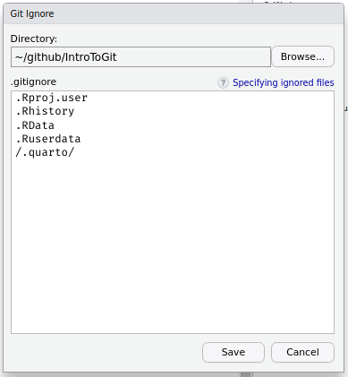

A Basic Workflow
Create a Project
The easiest and preferred way to create a new project is to use GitHub first (this is exactly what we did in “Getting Started”).
Create a Repo
Log in to your GitHub account and click on the left hand side of the home page.
Name your repo, provide a brief description, check “Add a README file,” and then click

Click  and copy the “HTTPS” link

Clone your Repo
- Open RStudio and create a new project:
File->New Project…->Version Control->Git


- Paste the link you copied from GitHub in the Repository URL field. The Project directory name fill will automatically be populated with your Repo’s name as it appears on GitHub. Select a location to store your project. Take note of where you are saving your project. I store all of my version controlled (Git) projects in a subdirectory of my home directory named “github” (
~/github). This has the benefit of keeping everything in one easy-to-find location. After you click create project, you may be prompted to enter your GitHub credentials.
Pull-(work)-stage-commit-push
The simplest workflow is to pull, stage, commit, and push. Other methods, such as Jenny Bryan’s repeated amend workflow, have some pros over this basic method, including the benefit of having many incremental steps to fall back on, but I will leave those as additional reading.

1. Pull
At the beginning of each session, start by Pulling the most up-to-date versions from GitHub by clicking the blue pull arrow () in the git tab of RStudio.
If you already have local changes and you pull, it may be rejected and you will have to merge the changes. We will practice this later today.
2. Work
Code away.
3. Stage
Once you are ready to commit your changes, click the checkbox next to the files you want to commit.

4. Commit
Click on the commit () button and write a concise but informative description of the work you did or changes you made, and then hit commit.
5. Push
Click on the push button () to send your changes to our GitHub repo.
Committing
What to Commit?
Yes:
Code
Source files (including raw data if it is not too large)
Configuration files (e.g.
.gitignoreand****.Rproj)Figures, Rmarkdown files, reports, and other outputs
LaTeX, markdown,
.csvand.tsvfilesetc.
No:
Personal or confidential information (e.g. passwords or PATs)
Large datasets
Microsoft Office documents (They are usually okay but can cause problems)
Ignoring Files
To tell git to ignore a file, add the path to the .gitignore file that was automatically created when you first created your version controlled R project. You can either do this by opening the file in RStudio or when in the Git tab, click More > Ignore… and add the file paths there.

How often should you commit?
Often. Each new commit is your fall back if something goes wrong.
Commit Messages
It’s helpful to think about what you did and write a concise description (< 50 characters). If you made many changes and can’t summarize your changes and why concisely, you might need to commit more often. Also remember that commit messages will be public in public repositories or if you make a private repository public after publishing.